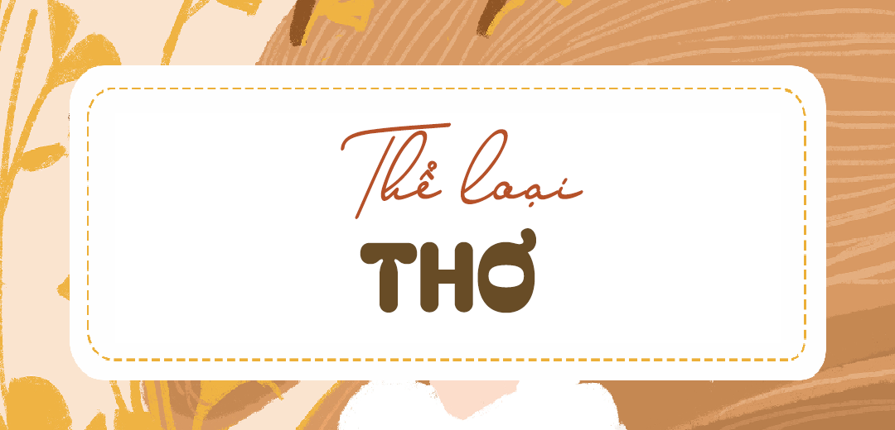

Đặc trưng thể loại Thơ
Thơ là thể loại văn học giàu cảm xúc, sử dụng hình ảnh, nhịp điệu và ngôn từ tinh tế để bày tỏ tâm tư, tình cảm. Hiểu rõ kiến thức về thể loại thơ giúp bạn phân tích tác phẩm sâu sắc, khám phá giá trị nội dung và nghệ thuật của bài thơ. Trong nghị luận văn học, vận dụng kiến thức thơ đúng cách sẽ giúp bài viết chặt chẽ, thuyết phục hơn.
1. Kiến thức trọng tâm
• Thơ là một thể loại văn học thuộc phương thức biểu hiện trữ tình, tuân theo một mô hình thi luật hoặc nhịp điệu nhất định. Thơ có khả năng diễn tả những tình cảm, cảm xúc của con người trước thế giới.
• Nhân vật trữ tình: là người trực tiếp cảm nhận và bày tỏ niềm rung động, cảm xúc trước một khung cảnh hoặc sự tình nào đó.
• Hình ảnh thơ: các sự vật, hiện tượng đời sống được tái tạo cụ thể, sống động bằng ngôn từ. Hình ảnh thơ có khả năng khơi dậy ấn tượng về thị giác, chiều sâu ý nghĩa. Đó có thể là hình ảnh con người, cảnh vật thiên nhiên,…
• Vần thơ: những chữ có cách phát âm giống nhau, hoặc gần giống nhau, được dùng để tạo nhịp điệu, nhạc điệu hay giọng điệu của bài thơ.
• Nhịp điệu: là những điểm ngừng, chỗ ngắt được phân bố hợp lý theo mạch cảm xúc để diễn đạt cảm nhận, cảm xúc cảm nhận thẩm mĩ về thế giới.
• Ngôn ngữ thơ: cô đọng, hàm súc, thiên về khơi gợi. Giữa các câu thơ có nhiều khoảng trống, đòi hỏi người đọc phải chủ động liên tưởng, tưởng tượng, thể nghiệm thì mới hiểu hết sự phong phú của ý thơ bên trong.
2. Cách áp dụng trong đoạn văn nghị luận văn học
Đề bài: Phân tích hai khổ thơ đầu của bài thơ “Tràng giang” của nhà thơ Huy Cận.
Sóng gợn tràng giang buồn điệp điệp,
Con thuyền xuôi mái nước song song.
Thuyền về nước lại, sầu trăm ngả;
Củi một cành khô lạc mấy dòng.
(Huy Cận, Tràng Giang, trích tập thơ Lửa thiêng, 1940)
Trong khổ thơ đầu của bài thơ “Tràng Giang”, Huy Cận cùng một “nỗi sầu vạn kỉ” đã đã mang đến những nét vẽ đẹp mà buồn về cảnh vật thiên nhiên và nỗi niềm của con người. Mở đầu bài thơ, Huy Cận mang đến một không gian sông nước rộng lớn thấm đẫm một nỗi buồn man mác: “Sóng gợn tràng giang buồn điệp điệp”
(1) Hình ảnh đầu tiên của bài thơ là những con sóng khẽ gợn, nối tiếp nhau tầng tầng lớp lớp không dứt. Tuy nhiên, chuyển động của con sóng không ào át mà chỉ là “gợn” rất khẽ, rất nhỏ – dường như tan đi trong không gian mênh mông của dòng sông. Cùng với hình ảnh dòng sông, sóng nước là hình ảnh con thuyền nhỏ bé đang trôi trên sóng nước, tạo nên một bức tranh thiên nhiên quen thuộc mang đậm màu sắc cổ điển đường thi.
• (1) Chỉ ra hình ảnh thơ và phân tích nội dung được gợi ra từ hình ảnh thơ
Có chăng bởi cảnh vật thấm đẫm tâm trạng con người mà ở ba câu thơ sau, vạn vật đều hiện lên trong trạng thái chia lìa, xa cách:
“Con thuyền xuôi mái nước song song,
Thuyền về nước lại, sầu trăm ngả;
Củi một cành khô lạc mấy dòng”
Từ láy sóng đôi “điệp điệp” ở câu thơ đầu và “song song” được đặt trong thế đăng đối trên dưới đã cho thấy sự hòa nhập giữa sóng nước vào sóng lòng. Thuyền và nước vốn có sự gắn bó khăng khít, nay dưới ngòi bút của Huy Cận thì con thuyền mặc cho dòng nước đẩy đưa mà không hướng đến một bến bờ nhất định. Câu thơ vì thế không chỉ vẽ nên hình ảnh một mặt sông mênh mông với bóng thuyền nhỏ mà còn gợi nhiều những suy ngẫm về kiếp người. (2) Đây có chăng chính là tâm tư của chủ thể trữ tình về những kiếp người đã đánh mất hoàn toàn sợi dây ràng buộc với cuộc đời? Đối diện với cảnh thuyền nước ấy, chủ thể trữ tình thấy một nỗi “sầu trăm ngả” đang dâng lên trong lòng mình. Đó chính là nỗi sầu thương của Huy Cận trước cảnh sông dài trời rộng, vừa là nỗi sầu buồn trước những kiếp người đang bị đày ải giữa dòng.
• (2) Phân tích những cảm nhận của chủ thể trữ tình trước khung cảnh thiên nhiên.
Tuy nhiên câu thơ thứ tư mới thực sự cho thấy tài năng của Huy Cận trong việc chọn lựa từ ngữ. (3) “Củi’ dưới ngòi bút đầy sáng tạo của nhà thơ đã trở thành một hình ảnh thơ độc đáo. Đó là cành củi khẳng khiu, khô héo, thậm chí gợi một sự sống đã lụi tàn. Tiếp đến, đảo ngữ và lượng từ “một” được sử dụng đã gợi thân phận nhỏ bé, cả sự lưu lạc vô phương vô định. Hoài Thanh có lí khi gọi đây là hình ảnh “thực đến sống sót” bởi nó đã diễn tả một cách chân thực nhất sự cô đơn, lạc lõng thậm chí là bế tắc của chính tác giả, hay của những cái tôi thơ Mới lúc bấy giờ. (4) Với nhịp thơ 4/3 trầm buồn và chậm rãi, Huy Cận đã thể hiện được nhịp trôi của dòng sông hay cũng là nhịp trôi của kiếp người. Bên cạnh đó, cách gieo vần chân, vần cách; sự hòa thanh tuân thủ theo đúng mô hình của thể thơ thất ngôn bát cú; sử dụng các từ láy gợi hình đã khắc họa trọn vẹn khung cảnh sông nước, cái tôi trữ tình của một Huy Cận đa sầu đa cảm khi đối diện với thiên nhiên bao la.
• (3) Phân tích nét đặc sắc trong ngôn ngữ thơ. Chỉ rõ giá trị biểu đạt được gợi ra từ cách dùng từ, từ ngữ ấy
• (4) Chỉ ra đặc sắc về nghệ thuật thơ: vần thơ, nhịp thơ. Chỉ ra tác dụng biểu đạt nội dung, cảm xúc của những yếu tố nghệ thuật.